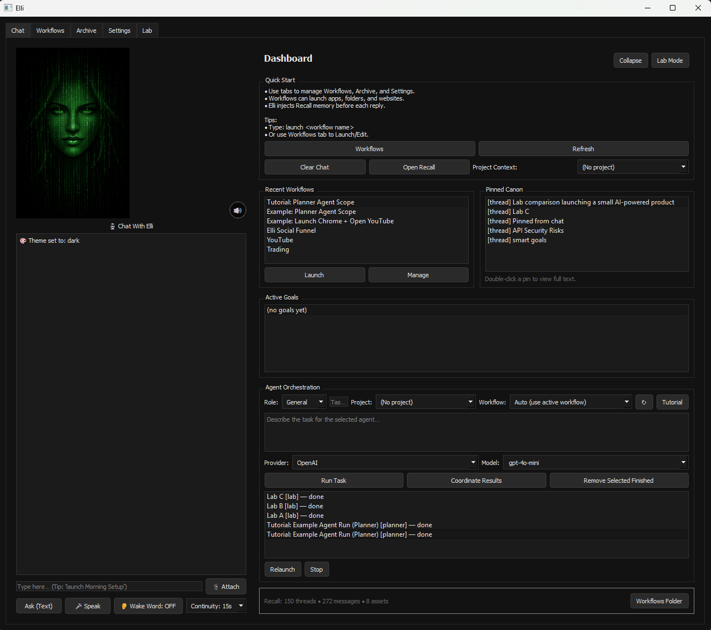

Persistent Recall System
Maintain long-term memory across threads, projects, and pinned canonical knowledge.
Elli gives you a persistent AI environment built around real workflows, scoped tools, and structured recall. Instead of starting over in every chat, Elli remembers what matters, works inside active project contexts, and coordinates the best model for the job.
Carry context across threads, projects, and pinned canonical knowledge.
Give Elli only the files, apps, and tools relevant to the task at hand.
Use compatible AI APIs without locking your assistant to one provider.

See Elli in action. This demo shows how workflows, recall, and multi-model comparison work together inside a persistent AI environment.
Traditional AI tools are tied to a single model, a single conversation, and a shallow sense of context. They can answer questions, but they cannot maintain project continuity, manage long-term recall, or operate cleanly inside real working environments.
Elli separates intelligence from the model layer and wraps it in a persistent system built around workflows, scoped tools, structured memory, and multi-model decision routing. The result is an AI environment that can stay informed, stay organized, and stay useful over time.
Elli brings together the strongest parts of recall, workflow control, and model orchestration into a single personal AI system.
Maintain long-term memory across threads, projects, and pinned canonical knowledge.
Compare outputs across multiple AI APIs and choose the strongest answer for the situation.
Define which files, applications, websites, and tools are available for each active workflow.
Route tasks through different roles, models, and agents while retaining shared project memory.
Promote valuable replies, decisions, and discoveries into memory that persists going forward.
Use compatible AI providers without rebuilding your assistant every time the model landscape changes.
Elli sits between your projects, tools, and AI models. Workflows define scope, recall preserves knowledge, and the Multi-LLM Lab compares results to select the strongest response.
Elli is designed around a simple idea: intelligence is stronger when it has memory, constraints, and access to the right tools. By separating model choice from the assistant itself, Elli can adapt as the AI ecosystem changes while still preserving continuity for the user.
Elli is easy to explain in four steps.
Set the active project context by selecting the files, tools, apps, and sites that matter.
Elli uses the active scope to keep the AI grounded inside the real environment.
Use the Multi-LLM Lab to evaluate responses across models and choose the strongest result.
Save the best outputs into canonical recall so Elli becomes more informed going forward.
Elli is the culmination of multiple projects merging into a single personal AI environment built to demonstrate modular system design, persistent memory, and multi-model coordination.
The conversational assistant evolved into a broader AI operating environment with more structure, more flexibility, and a much stronger system identity.
The idea of organized, searchable storage became Elli’s structured recall system for reusable knowledge and project continuity.
Workflow-driven context became the foundation for scoping tools, files, apps, and websites inside active project environments.
Together these systems create something bigger than chat: a memory-aware, workflow-driven orchestration layer for real productivity.
Elli is currently in active development. Early followers can watch the build evolve while the full system and pricing model take shape.
Best for early followers who want product updates, demos, and launch news while Elli is still evolving.
Positioned as a personal AI operating environment with multi-model coordination, workflow memory, and long-term recall.
Elli is headed toward a future where memory, workflows, models, and tools all work together inside one coordinated environment—something closer to a personal AI OS than a chat tab.
Elli gives technical users a system for working with AI across projects instead of resetting context every time they open a new thread.
Elli is designed for a future where the best result may come from different models, not just the one a platform defaults to.
Elli is about continuity: keeping useful knowledge alive and useful across time, projects, and evolving tools.
No. Elli is built to be model agnostic, which means she can work with compatible AI APIs instead of being locked to a single provider.
Elli adds persistent recall, workflow-based project context, scoped tools, and model orchestration on top of standard chat behavior.
Elli is especially compelling for developers, builders, creators, and technical users who want more continuity and control from AI.
Yes. Elli is actively being developed and demonstrated. Follow the build or join the early access list to see new features as they are released.
Join the early access list, follow the build, and be first to see new Elli demos as the system grows.